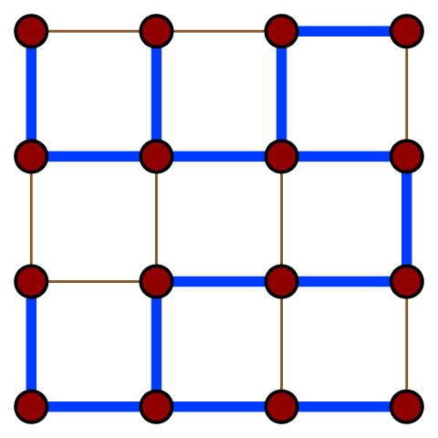

Остовным деревом графа называется дерево, которое можно получить из него путём удаления некоторых рёбер. У графа может существовать несколько остовных деревьев, и чаще всех их достаточно много.
На иллюстрации приведено одно из остовных деревьев (рёбра выделены синим цветом) решёткообразного графа.
Для взвешенных графов существует понятие веса остовного дерева, которое определено как сумма весов всех рёбер, входящих в остовное дерево. Из него натурально вытекает понятие минимального остовного дерева – остовного дерева с минимальным возможным весом.

Для нахождения минимального остовного дерева графа существуют два основных алгоритма: алгоритм Прима и алгоритм Крускала. Они оба имеют сложность $O(M \log N)$, поэтому выбор одного из них зависит от ваших личных предпочтений. В этой лекции мы разберём оба.
Алгоритм Прима в идее и реализации очень похож на алгоритм Дейкстры. Как и в алгоритме Дейкстры, мы поддерживаем уже обработанную часть графа (минимального остовного дерева), и постепенно её расширяем за счёт ближайших вершин.
Утверждается, что если разделить вершины графа на два множества (обработанные и необработанные), первое из которых составляет связную часть минимального остовного дерева, то ребро минимальной длины, связывающее эти два множества гарантированно будет входить в минимальное остовное дерево.
Таким образом, для нахождения минимального остовного дерева начнём с произвольной вершины и будем постепенно добавлять ближайшие к уже имеющимся.

На иллюстрации красным цветом выделены рёбра, уже вошедшие в минимальный остов, а чёрным – текущие кандидаты, из которых выбирается ребро с минимальным весом.
Будем искать вес минимального остовного дерева. Для нахождения ближайшей вершины воспользуемся очередью с приоритетом (аналогично алгоритму Дейкстры), в которой будем хранить пары (расстояние от остова до вершины, номер вершины).
#include <bits/stdc++.h>
using namespace std;
const int INF = 1e9 + 7;
vector<pair<int, int>> graph;
bool used[100000]; //включили ли мы соответствующую вершину в остов
int main() {
//Ввод графа...
int mst_weight = 0; //Текущий вес остова.
priority_queue<pair<int, int>, vector<pair<int, int>>, greater<pair<int, int>>> q;
q.push({0, 0}); //Начнём с вершины 0.
while (!q.empty()) {
pair<int, int> c = q.top();
q.pop();
int dst = c.first, v = c.second;
if (used[v]) { //вершина уже добавлена в остов
continue;
}
used[v] = true;
mst_weight += dst;
for (pair<int, int> e: graph[v]) {
int u = e.first, len_vu = e.second;
if (!used[u]) {
q.push({len_vu, u}); //Заметьте: мы учитываем только длину ребра.
}
}
}
cout << "Minimum spanning tree weight: " << mst_weight << endl;
}
Алгоритм Крускала достаточно прост в своей идее и реализации. Он заключается в сортировке всех рёбер в порядке возрастания длины, и поочерёдному добавлению их в минимальный остов, если они соединяют различные компоненты связности.
Более формально: пусть мы уже нашли некоторые рёбра, входящие в минимальный остов. Утверждается, что среди всех рёбер, соединяющих различные компоненты связности, в минимальный остов будет входить ребро с минимальной длиной.
Для реализации алгоритма Крускала необходимо уметь сортировать рёбра по возрастанию длины (для этого воспользуемся собственным типом данных) и проверять, соединяет ли ребро две различных компоненты связности. Для этого будем просто поддерживать текущие компоненты связности с помощью структуры данных DSU.
Визуализация работы алгоритма Крускала:

Используем реализацию DSU со всеми оптимизациями из соответствующей лекции:
int p[100000];
int rank[100000];
void init_dsu() {
for (int i = 0; i < 100000; i++) {
p[i] = -1;
rank[i] = 1;
}
}
int get_root(int v) {
if (p[v] == -1) {
return v;
} else {
return p[v] = get_root(p[v]); //На выходе из рекурсии переподвешиваем v
}
}
bool merge(int a, int b) {
int ra = get_root(a), rb = get_root(b);
if (ra == rb) {
return false;
} else {
if (rank[ra] < rank[rb]) {
p[ra] = rb;
} else if (rank[rb] < rank[ra]) {
p[rb] = ra;
} else {
p[ra] = rb;
rank[rb]++;
}
return true;
}
}
//Тип для представления рёбер.
struct edge {
int a, b, len;
bool operator<(const edge& other) {
return len < other.len;
}
}
int main() {
vector<edge> edges;
//Ввод edges...
sort(edges.begin(), edges.end());
int mst_weight = 0;
for (edge e: edges) {
if (merge(e.a, e.b)) { //Если a и b находятся в разных компонентах,
mst_weight += e.len; //Добавить ребро в минимальный остов.
}
}
cout << "Minimum spanning tree weight: " << mst_weight << endl;
}
Хотя оба алгоритма работают за $O(M \log N)$, существуют константные различия в скорости их работы. На разреженных графах (количество рёбер примерно равно количеству вершин) быстрее работает алгоритм Крускала, а на насыщенных (количество рёбер примерно равно квадрату количеству вершин) – алгоритм Прима (при использовании матрицы смежности).
На практике чаще используется алгоритм Крускала.